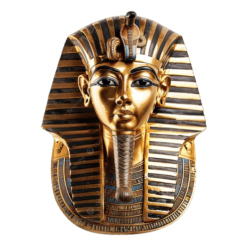

كيف بَنَت "عقيدة الخلود" معجزة الاجداد؟ وكيف خذلتنا السينما
لغزا يحير العالم. هل بين جدران المعابد الشاهقة وأسرا...
Read Discovery →
Journey through five thousand years of grandeur, divinity,
and human brilliance carved in stone and gold.
Featured Discoveries
Selected explorations of the most notable discoveries from the most established civilizations of the ancient world.
إرث ليست مجرد مجلة، بل هي توثيق سينمائي وبحثي فريد يجمع بين غموض الماضي وعظمة الاستكشاف. بين صفحاتها، نأخذك في رحلة موازية نرفع فيها الستار عن كواليس الحفائر، ونحمي بها الإرث الممتد عبر آلاف السنين لتراه بعيون اليوم. في كل قصة، نكشف عن أسرار دفينة، ونروي حكايات لم تُروى من قبل، ونقدم لك اكتشافات تنبض بالحياة من قلب التاريخ. إرث عباره عن جسر يربط بين الماضي والحاضر، حيث يلتقي العلم بالخيال، والتاريخ بالمعاصرة، لتمنحك تجربة لا مثيل لها في عالم الآثار والحضارات القديمة.
Featured Discoveries
Selected explorations of the most notable discoveries from the most established civilizations of the ancient world.
لغزا يحير العالم. هل بين جدران المعابد الشاهقة وأسرا...
Read Discovery →رغم مرور آالف السنين على الحضارة المصرية القديمة، ال تزال رموزها حاضرة بقوة في تفاصيل الحياة المعاصرة...
Read Discovery →في قلب هضبة الجيزة، حيث تقف األهرامات شاهدة على عظمة الحضارة المصرية القديمة، يتوافد الزوار من مختلف أنحاء العالم...
Read Discovery →في قرى ومدن مصر يسيطر حلم الغنا و الثراء السريع على عقول كثيرين يبدأ األمر بوهم يزرعه دجال في عقل صاحب بيت يقنعه أن رزقه مدفون ...
Read Discovery →تشير تقديرات رسميه الي ان عدد القطع الاثريه المصريه الموجوده خارج البلاد تتجاوز ال 100 الف ...
Read Discovery →يستعيد التاريخ المصري واحده من أكثر اللحظات المميزة حين استوطن الملك رمسيس الثان يقلب القاهرة ألكثر من خمسين عاما ليس كحاكم يمتلك زمام السلطة بل كاثر عظيم حاصرت ...
Read Discovery →
في قلب القاهره وتحديدا في عام 1976 شهد مطار لبورجيه في فرنسا مشهدا سرياليا لم يشهده التريخ ...
Read Discovery →لم يكن اسم توت عنخ آمون معروفا علي نطاق واسع لقرون طويله بل كان مجرد ملك صغير حكم لفتره قصيره...
Read Discovery →لم تكن االثار المصريه مجرد بقايا من زمن بعيد بل كانت دائما رساله حضاره تسافر عبر العصور فمنذ اللحظات االولي...
Read Discovery →
لم يكن فيضان المياه مجرد حدث طبيعي بل كان لحظة فارقة كادت أن تمحو صفحات كاملة من تاريخ مصر القديم...
Read Discovery →في ظل تزايد االهتمام العالمي بالمزادات الفنية واألثرية وما تشهده من تداول لقطع...
Read Discovery →
يعد السفر عبر الزمن ضرب من ضروب الخيال الي ان يثبت العكس و يتحول الخيال الي حقيقه كما قال جورج برناد شو...
Read Discovery →بافتراض نظريه العوالم الموازيه فيمكننا القول ان عالم الحفائر و الاثار هو عالم موازي بحد ذاته فيما يحتويه من غموض ...
Read Discovery →
مما لا شك فيه ان الاثار المصريه مازالت تحوي في كواليسها اسرارا و خفايا لا تحصي من بدايه فكره انشاء اثر او تمثال حتي الشكل النهائي ...
Read Discovery →
يقول الله عز وجل في كتابه الكريم .. ان اول بيت وضع للناس للذي ببكه مباركا ...
Read Discovery →لم يعد نقل القطع األثرية إلى الخارج هو السبيل الوحيد لتعريف العالم بالحضارة ...
Read Discovery →
بعد أكثر من أربعة آالف عام على بنائه، ال يزال الهرم األكبر للملك خوفو يحتفظ بكثير من أسراره. فذلك شامخا على هضبة الجيزة يواصل إثارة فضول العلماء والباحثين، خاصة مع دخول الصرح الضخم الذي يقف...
Read Discovery →ف مصي والعالم وارتبط اسمه عىل مدار عقود طويلة بالكشف عن ارسار الحضارة المصية القديمة والدفاع عن اثارها ...
Read Discovery →وتحديدا في الصعيد هو يعد الفكر السائد في قرى مصر ونجوعها البحث عن اآلثار والتي لم تعد قضية التنقيب عن اآلثار مجرد بحث عن قطع ذهبية بل تحولت إلى ظاهره مليئه بدماء...
Read Discovery →المتحف المصري الكبير ذلك الصرح الذي يحتضن في داخله على االف القطع األثرية و تجد الزائرين يأتون له من كل مكان و بينما تتجه االنظار ...
Read Discovery →تعد السينما في عصرنا الحديث من اهم اسلحه تشكيل الوعي و تحديد شكل التفكير من خالل ما يتم بثه من رسائل و معلومات من خالل السينما و ...
Read Discovery →
الكثير هو ان بعض العادات والتقاليد التي مارسها ما زالت موجوده في حياتنا اليوميه فما هي ....
Read Discovery →هو اعمال البحث والكشف عن االثار والتي تتم فق ط ب بترخيص رسمي وتحت اشراف السلطات الحكوميه ...
Read Discovery →في ظل التنافس المتزايد بين المقاصد السياحية العالمية، تسعى مصر إلى ترسيخ مكانتها كإحدى أهم الوجهات السياحية في العالم ....
Read Discovery →
تعتبر مصر هي الوجهة االولى عالميا لما نتحدث عن سحر التاريخ وعظمة الحضارة االنسانية القديمة وبالرغم من ان االضواء ...
Read Discovery →غذّ السينما واألساطير الشعبية والروايات المتناقلة عبر األجيال، لطالما أحاطت الحضارة المصرية القديمة بهالة من الغموض، تها حتى أصبحت بعض الخرافات أكثر انتشا ًرا من الحقائق...
Read Discovery →
لطالما أثارت الحضارة المصرية القديمة اهتمام العالم، لما تحمله من أسرار وتفاصيل تكشف جانبًا من حياة المصريين القدماء...
Read Discovery →
أكد الدكتور أحمد سعيد، رئيس قسم اآلثار بكلية اآلداب جامعة بنها، أن عدد اآلثار الغارقة ليس رق ًما ثابتًا بسبب اتساع نطاق...
Read Discovery →تزخر دلتا مصر بعدد كبير من المواقع األثرية التي تعكس عراقة الحضارة المصرية القديمة، إال أن كثي ًرا من هذه المواقع ال يحظى...
Read Discovery →
تُعد النقوش المصرية القديمة واحدة من أهم وأقدم أشكال التعبير البصري في تاريخ الحضارات اإلنسانية، إذ لم تكن مجرد وسيلة ...
Read Discovery →
لم يعد دور المتاحف فى العصر الحديث مقتصرا علي عرض القطع األثرية والحفاظ عليها ...
Read Discovery →في عصر اصبحت فيه المعلومة تنتشر بضغطة زر ، لم تعد اآلثار المصرية حبيسة جدران المتاحف او صفحات الكتب األكاديمية ، بل انتقلت بقوة الى فضاء اإلعالم الرقمي ومنصات التواصل ..
Read Discovery →تمثل منظمة اليونيسكو إحدى الجهات الدولية المعنية بحماية التراث الثقافي واإلنساني، من خالل االتفاقيات والمعايير التي تهدف إلى الحفاظ على المواقع ذات القيمة العالمية االستثنائية...
Read Discovery →ليس المتحف مجرد مكان تعرض فيه القطع األثرية خلف واجهات زجاجية صامتة، بل هو عالم كامل ينبض بالحياة ويأخذ الزائر ...
Read Discovery →New ground-penetrating radar surveys have revealed concealed chambers...
Read Discovery →The Hypostyle Hall's 134 colossal columns still astonish engineers...
Read Discovery →Eleven kilograms of solid gold, lapis lazuli and quartz...
Read Discovery →Egypt is not a country we live in but a country that lives within us.— Ancient Proverb